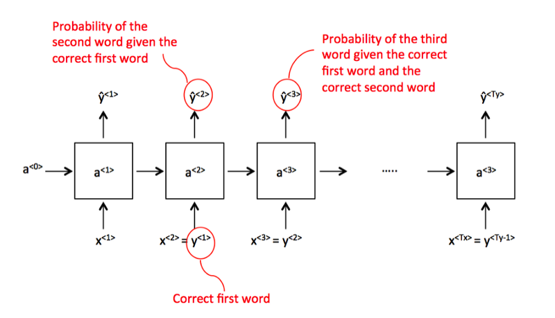
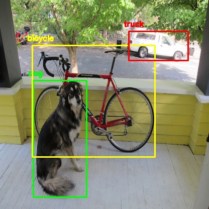
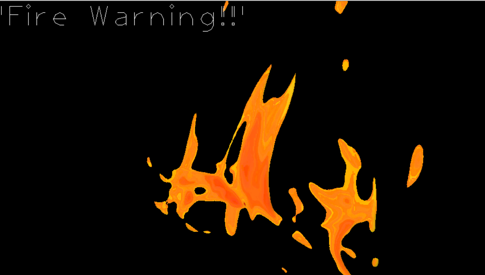
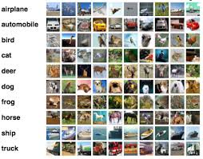
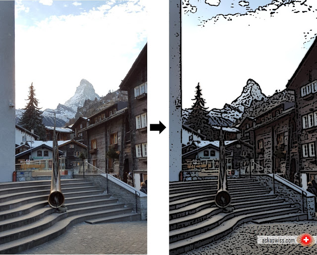
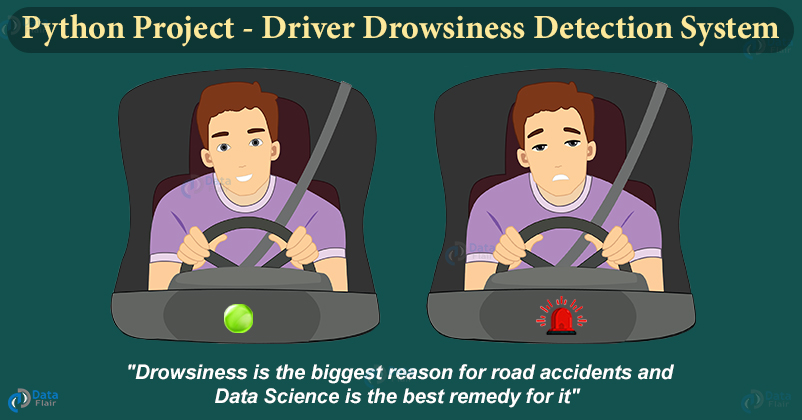

Detect face masks in real-time video streams. We'll wrap up the post by looking at the results of applying our face mask detector.Are you Wearing Face Mask .Lets Check the code in my full post.

LSTM model uses Deep learning with a network of artificial “cells” that manage memory, making them better suited for text prediction than traditional neural networks and other models. The next word is simply “green” and could be predicted by most models and networks.Can LSTM predict Lets check code out in my post.
Machines can learn to recognize happiness , I'm going to show you how to create a facial recognition model that can do so. Are You Smiling Lets Check code in full post.

YOLO: Real-Time Object Detection. You only look once (YOLO) is a state-of-the-art, real-time object detection system.Can it detect All objects.Lets Check code in our post.

Fire detection systems are designed to discover fires early in their development when time will still be available for the safe evacuation of occupants. Can it Detect Fire Check code in my full post.

The CIFAR-10 dataset consists of 60000 32x32 colour images in 10 classes, with 6000 images per class. There are 50000 training images and 10000 test images.Can We find which image belongs to which Class. Check the Code in my post.
.

Cartoon yourself and convert your photo and picture into cartoon effect .Will my image Change in cartoon effect. Check the Code in my post.
.

Driver drowsiness detection is a car safety technology which helps prevent accidents caused by the driver getting drowsy. Are you sleeping during Driving 😌 Check the Code in my post.